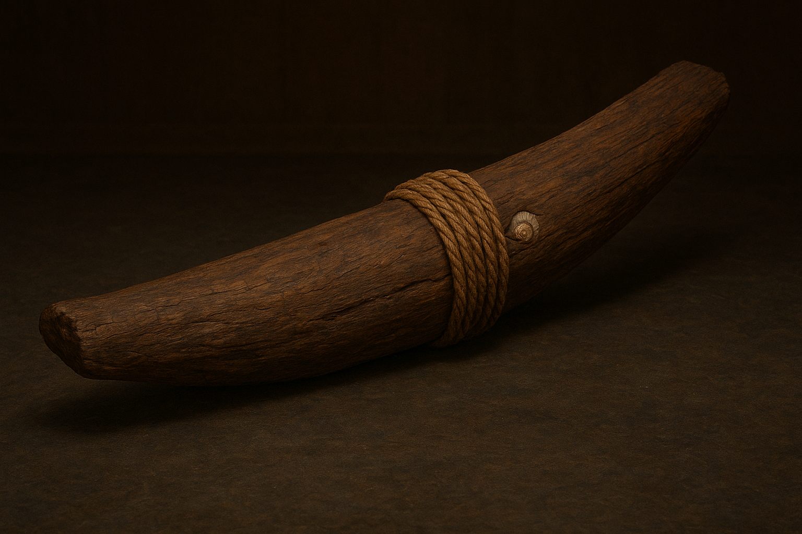
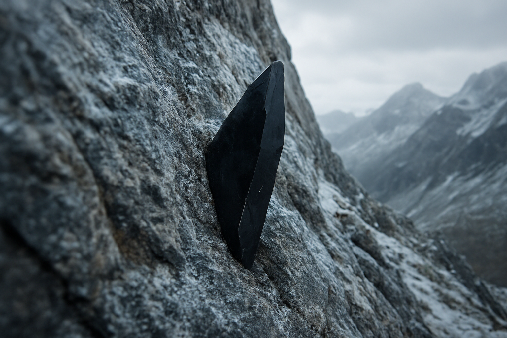
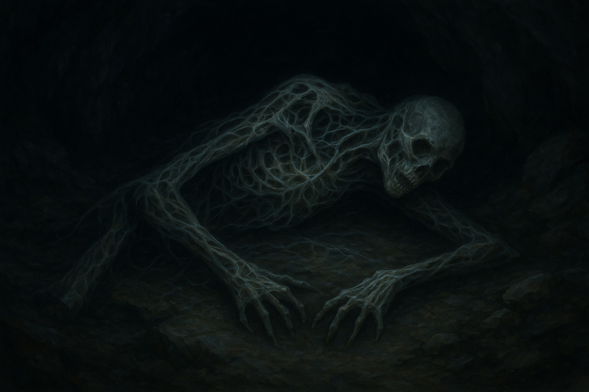
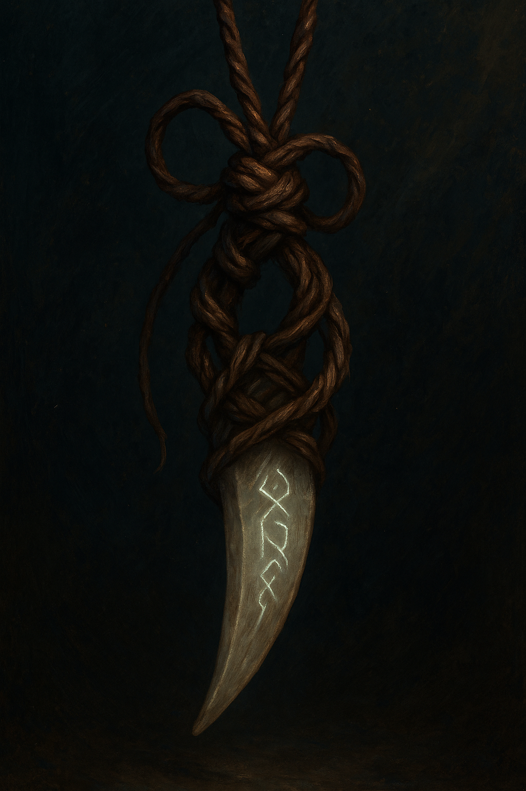
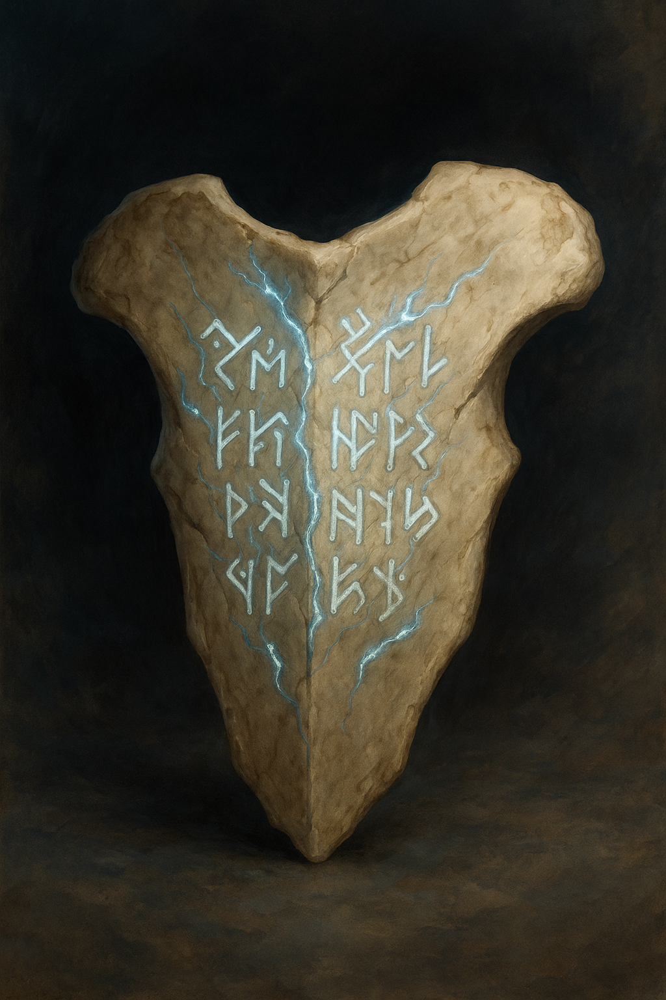

Ocean-Weathered Va‘a Fragment
- Name: The Ocean-Weathered Va‘a Fragment
- Material: Carved hardwood (breadfruit tree), coconut-fiber rope, seashell inlay
- Size/Weight/Shape: 1.5 m length, 20 kg; curved hull fragment
- Estimated Age: ~800 years (carbon-dated)
- Preservation State: Partial fragment; sea-worn but intact
- Location Found: Polynesian atoll, coastal midden
- Use and Function: Hull component of double-hulled canoe
- Likely Purpose: Seafaring vessel construction
- Evidence of Use: Rope-wear grooves, resin traces
- Manufacture Clues: Stone adze tool marks, lashings, inlay
- Cultural Context: Polynesian voyaging tradition
- Found With: Fishing implements, shell ornaments
- Burial/Habitat Context: Coastal midden site
- Symbolism: Canoe as a vessel of life, destiny, and the sea god Tangaroa
- Comparison: Similar fragments from Tahiti and Hawai‘i

Dark Crystal Shard
- Name: Dark Crystal Shard
- Material: Volcanic glass-like crystal, dark with faint inner luminescence.
- Size/Weight/Shape: 30 cm long, jagged, sharp edges; surprisingly heavy for size.
- Estimated Age: Unknown; mineral dating inconclusive due to magical interference.
- Preservation State: Complete, edges unweathered.
- Location Found: Mountain crevice, protruding from basalt cliff face.
- Use and Function: Likely ritual or energy-focusing object.
- Likely Purpose: Ceremonial artifact, possibly a conduit.
- Evidence of Use: Micro-striations along edges, as if handled or embedded.
- Manufacture Clues: Appears naturally formed, though symmetry suggests modification.
- Cultural Context: Nearby cairns and petroglyphs depict jagged crystals.
- Found With: No direct artifacts, only mineral scatter.
- Burial/Habitat Context: Mountain pass crevice, partially obscured by erosion.
- Symbolism: Local myths speak of “the mountain’s heart.”
- Comparison: Similar resonance patterns to shards in the Museum’s Resonant Stones collection.

Stone of Echoing Whispers
- Name: Stone of Echoing Whispers
- Material: Granite-like stone infused with mineral veins glowing faintly.
- Size/Weight/Shape: Roughly spherical, 40 cm across, weighs approx. 25 kg.
- Estimated Age: Inconclusive; inscriptions suggest ritual use centuries ago.
- Preservation State: Pristine; surface unchipped, carvings crisp.
- Location Found: Highland ritual site, near collapsed altar stones.
- Use and Function: Ritual anchor; absorbs and reflects spiritual energy.
- Likely Purpose: Ceremonial focus for communing with ancestral spirits.
- Evidence of Use: Surface etched with burn rings; faint chanting echoes reported.
- Manufacture Clues: Carvings precise; mineral veins aligned with geometric design.
- Cultural Context: Found where overlapping rituals once caused instability.
- Found With: Shattered ritual implements, fragments of bone charms.
- Burial/Habitat Context: Not buried; placed centrally on ceremonial ground.
- Symbolism: Inscriptions reference cycles of death and rebirth.
- Comparison: Comparable to other ritual anchors but unique in retaining active resonance.

The Hollow Husk
- Name: The Hollow Husk
- Material: Semi-organic remains; leathery tissue, bone-like ridges, and silvery filament veins.
- Size/Weight/Shape: 1.8 m long, humanoid silhouette but elongated and hollow; lightweight due to desiccation.
- Estimated Age: Indeterminate; carbon traces too degraded, context suggests prehuman layer.
- Preservation State: Complete but desiccated, husk intact with minimal collapse of structure.
- Location Found: Subterranean cavern beneath collapsed strata, recorded in restricted logbook.
- Use and Function: Unknown; not a tool. Possible vessel, biological construct, or ritual focus.
- Likely Purpose: Potential container or host form; unclear if once alive or fabricated.
- Evidence of Use: Filaments worn and fractured in regions, suggesting depletion of energy.
- Manufacture Clues: No crafting marks; biological origin, but filament veins imply intentional design.
- Cultural Context: Found in isolation; cavern walls bore carvings of eyes and spirals.
- Found With: No accompanying artifacts, only mineral fragments.
- Burial/Habitat Context: Cavern chamber, partially buried in rockfall, no formal interment.
- Symbolism: Reported sensation of being watched; veins glow faintly in lantern light.
- Comparison: No direct parallels; faint resemblance to mythic “Watcher Husks” in Museum manuscripts.

Patron’s Coin of Eternal Credit
- Name: Patron’s Coin of Eternal Credit
- Material: Etched silver alloy with faint traces of stardust
- Size/Weight/Shape: Palm-sized, circular, unnaturally light despite metallic appearance
- Estimated Age: Impossible to date; the metal resists all carbon-dating attempts
- Preservation State: Perfect, shows no signs of tarnish or wear
- Location Found: First appeared in the Museum’s archives without record of acquisition
- Use and Function: Token of promise
- Likely Purpose: Ensures bearer “never has to worry again” in matters of wealth or safety
- Evidence of Use: None—coin always appears untouchable, even when handled
- Manufacture Clues: Impossible craftsmanship; etchings shift slightly when viewed from different angles
- Cultural Context: Rumored to be minted by forgotten archivists who recorded debts of destiny
- Found With: Always solitary; never alongside other artifacts
- Burial/Habitat Context: No burial; appears only when a patron of the Museum is in need
- Symbolism: Represents eternal patronage, trust, and abundance
- Comparison: No known artifact compares; appears unique in history

Rose’s Twitching Charm
- Name: Rose’s Twitching Charm
- Material: Braided sinew, dried root fibers, and a shard of translucent bone
- Size/Weight/Shape: Small talisman, fits in the palm; unnervingly warm to the touch
- Estimated Age: Unknown; organic components resist decay and testing
- Preservation State: Appears whole, fibers flex as if alive
- Location Found: Delivered by my companion Rose, after returning from the forest’s edge
- Use and Function: Functions as a protective charm—though “protection” may carry predatory undertones
- Likely Purpose: Sympathetic talisman binding animal spirit to bearer
- Evidence of Use: Fibers tense and pulse faintly when held
- Manufacture Clues: Constructed with a bone fragment carved in a script resembling tissue sutures
- Cultural Context: Likely tied to forest cults who revered both predator and prey; language on shard matches cadences of the tongue within me
- Found With: Always solitary—Rose carried it in her jaws
- Burial/Habitat Context: Forest undergrowth, near wolf territories
- Symbolism: Represents survival, transference of wounds, and loyalty stronger than death
- Comparison: No known charms echo the blend of anatomy and forest ritual seen here

The Archivist’s Sternum Fragment
- Name: The Archivist’s Sternum Fragment
- Material: Calcified bone plate, unusually dense, veined with crystalline growths
- Size/Weight/Shape: Roughly hand-sized, flat curve resembling the human sternum; surprisingly heavy for its size
- Estimated Age: Indeterminate; bone tissue resists both carbon dating and comparative osteology
- Preservation State: Perfect—surface unblemished, crystal veins faintly luminescent
- Location Found: Discovered deep in the Museum archives, misfiled among anatomical teaching specimens
- Use and Function: Appears ceremonial rather than practical; surface etchings indicate it was “read” more than used
- Likely Purpose: Ritual ledger bone, perhaps used to record debts or oaths in living script
- Evidence of Use: Runes glow faintly when touched by bare skin, particularly along scar tissue
- Manufacture Clues: Inscribed with the same shifting bone-script found on Rose’s Twitching Charm; etchings resemble surgical sutures
- Cultural Context: Suggests an origin among healers or archivists who recorded history not in books, but in bone itself
- Found With: Catalogued alone, though nearby specimens bore unfamiliar catalog numbers struck through in red ink
- Burial/Habitat Context: None; appears to have been placed deliberately within the archives without record of entry
- Symbolism: Represents the body as archive, and memory as marrow
- Comparison: Closely echoes the markings on Rose’s Twitching Charm, though its scale and craftsmanship suggest institutional rather than personal origin